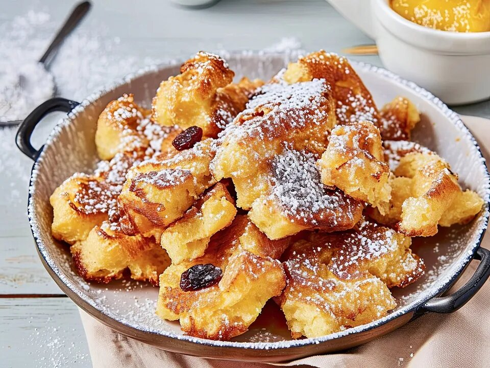

Kaiserschmarn

Description
Recipe for a healthy version of the world famous austrian Dish Kaiserschmarn.
Ingredients
- 2TL Baking powder
- 2TL Honey
- 80g Spelled Flour
- 160g Skyr
- 3 Eggs
Steps
- Carefully seperate the egg white from the yolk
- Beat egg whites until stiff
- Put the yolk, flour, honey, skyr and baking powder into one cup and mix thouroughly
- Stir in the stiff egg white with the rest
- Place in pan and cook until golden brown